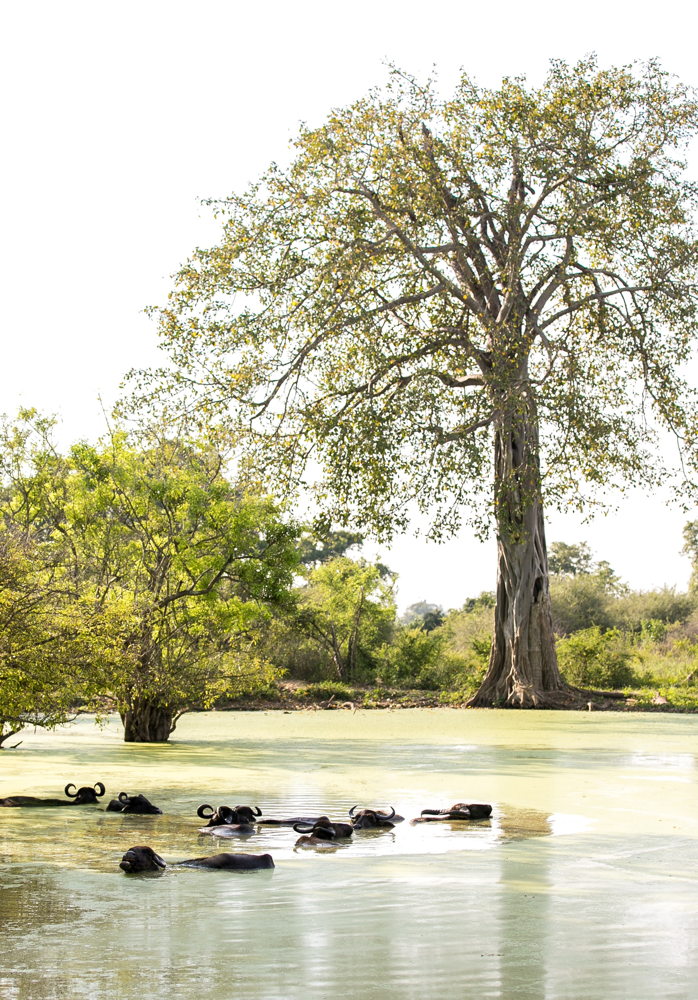

Like the numerous amount of beaches, Sri Lanka has a diverse range of wildlife, with some species only belonging to the island!
Yala National Park
Located to the south-east corner of the island, there's a large variety of animals, birds and insects in the reserve, but here's some information about some of the commonly seen species:
| Species | Weight | Diet | Conservation Status |
|---|---|---|---|
| Sri Lankan Leopard | Female- 29kg, Male- 56kg | Small mammals, birds, and reptiles. | Endangered |
| Sri Lankan Elephant | Female- 2700kg, Male- 4000kg | Berries, bark, leaves, roots and foliage. | Endangered |
| Sri Lankan Sloth bear | Female- 150kg, Male- 250kg | Variety of fruits, bee hives, leafy plants, nuts, vegetables and rodents. | Highly Threatened |
Horton Plains

This nature reserve sits atop of the mountainous terrain of the upcountry districts of the country. It has a dedicated trekking path made for an adventurous hike
Udawalawe National Park
Another well-known nature reserve, Uduwalawe is situated towards the south-central regions of the country. It too has many unique plants and animals!